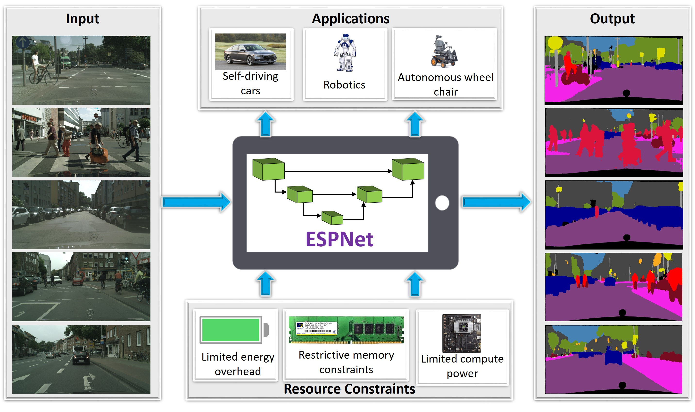
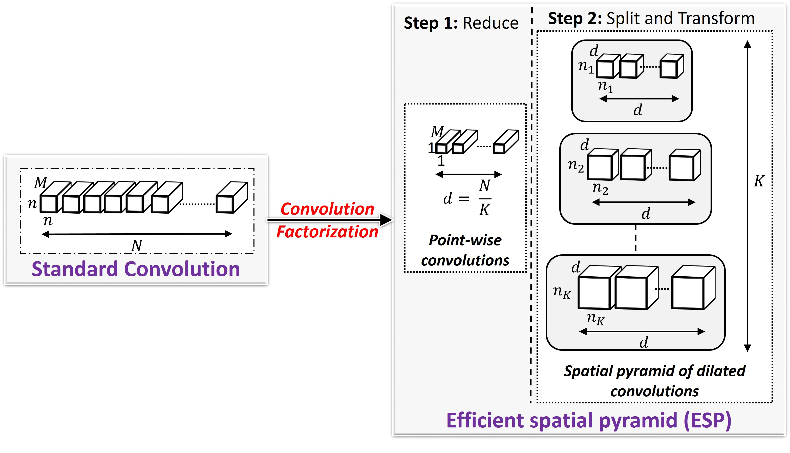
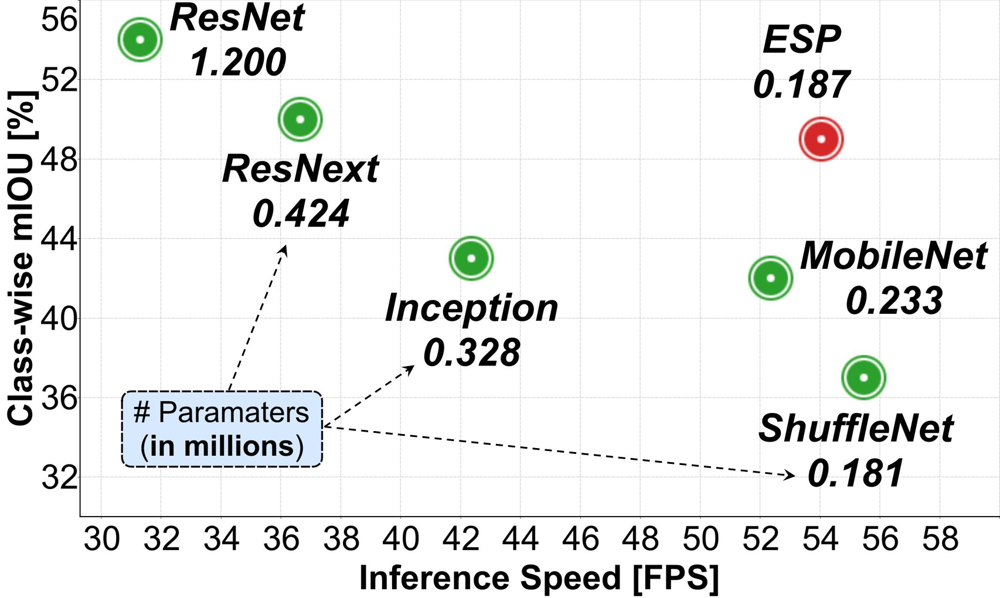
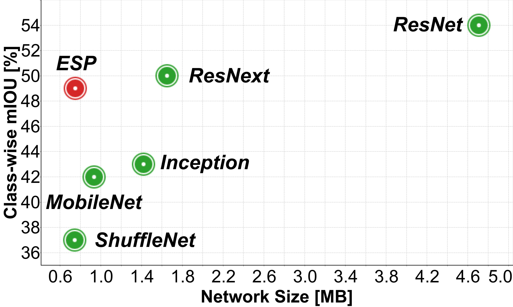
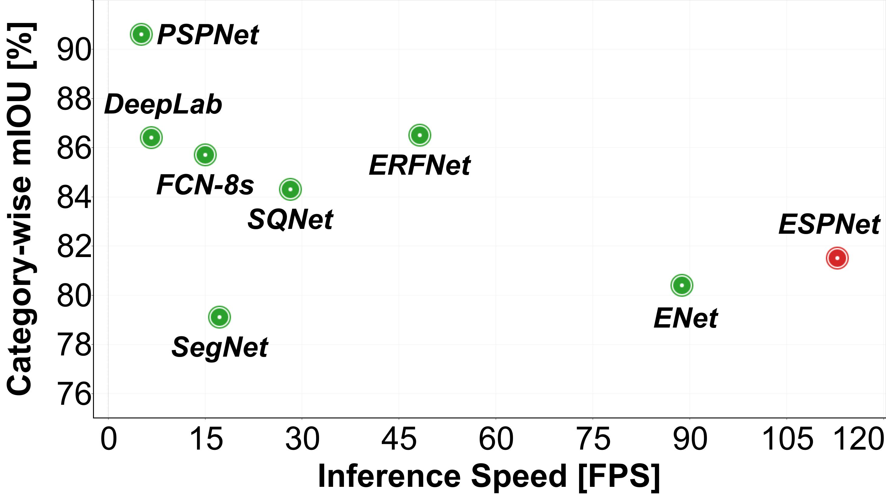
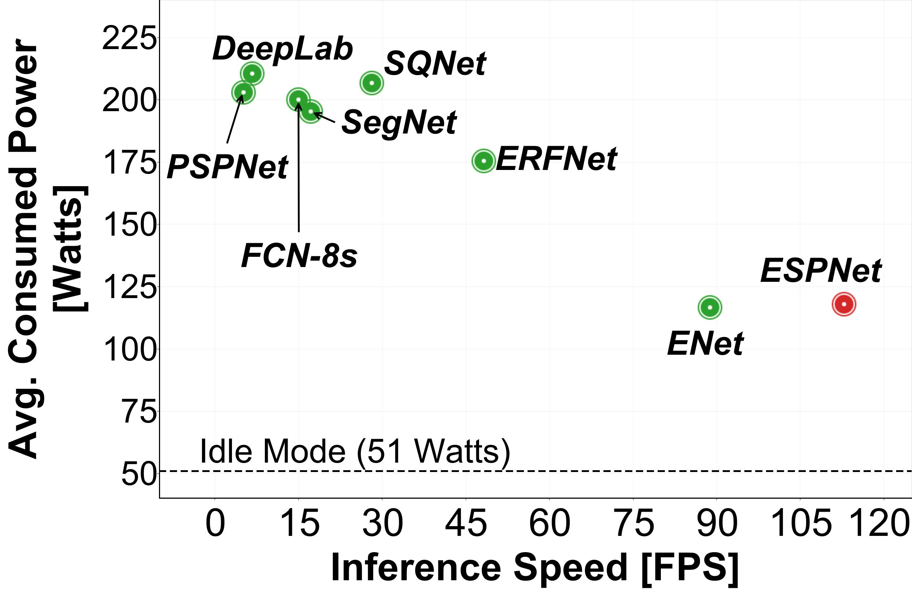

Sachin Mehta, Mohammad Rastegari, Anat Caspi, Linda Shapiro, and Hannaneh Hajishirzi
[Paper]
Sachin Mehta1, Mohammad Rastegari2, Anat Caspi1, Linda Shapiro1, and Hannaneh Hajishirzi1
1
University of Washington, Seattle, WA, USA
2
Allen Institute for AI and XNOR.AI
|  |
Figure: ESPNet for visual scene understanding on edge devices. |
Abstract
We introduce a fast and efficient convolutional neural network, ESPNet, for semantic segmentation of high resolution images under resource constraints. ESPNet is based on a new convolutional module, efficient spatial pyramid (ESP), which is efficient in terms of computation, memory, and power. ESPNet is 22 times faster (on a standard GPU) and 180 times smaller than the state-of-the-art semantic segmentation network PSPNet, while its category-wise accuracy is only 8% less. We evaluated EPSNet on a variety of semantic segmentation datasets including Cityscapes, PASCAL VOC, and a breast biopsy whole slide image dataset. Under the same constraints on memory and computation, ESPNet outperforms all the current efficient CNN networks such as MobileNet, ShuffleNet, and ENet on both standard metrics and our newly introduced performance metrics that measure efficiency on edge devices. Our network can process high resolution images at a rate of 112 and 9 frames per second on a standard GPU and edge device, respectively.
Downloads
|  | ESPNet: Efficient Spatial Pyramid of Dilated Convolutions for Semantic Segmentation
Sachin Mehta, Mohammad Rastegari, Anat Caspi, Linda Shapiro, and Hannaneh Hajishirzi [Paper] |
Comparison with efficient convolutional modules
|  |  | |
Figure: Comparison between state-of-the-art efficient convolutional modules. Our ESP module outperformed MobileNet and ShuffleNet modules by 7% and 12%, respectively, while learning a similar number of parameters and having comparable network size and inference speed. Furthermore, the ESP module delivered comparable accuracy to ResNext and Inception more efficiently. A basic ResNet module (stack of two 3 × 3 convolutions with a skip-connection) delivered the best performance, but had to learn 6.5× more parameters. |
||
Comparison with state-of-the-art semantic segmentation networks
|  |  | |
Figure: Comparison between state-of-the-art semantic segmentation networks. Our ESPNet is fast, has low power consumption, and delivers good category-wise segmentation accuracy. |
||
References
[1] (PSPNet) Zhao, Hengshuang, et al. "Pyramid scene parsing network." IEEE Conf. on Computer Vision and Pattern Recognition (CVPR). 2017.
[2] (FCN-8s) Long, Jonathan, Evan Shelhamer, and Trevor Darrell. "Fully convolutional networks for semantic segmentation." Proceedings of the IEEE conference on computer vision and pattern recognition. 2015.
[3] (SegNet) Badrinarayanan, Vijay, Alex Kendall, and Roberto Cipolla. "Segnet: A deep convolutional encoder-decoder architecture for image segmentation." IEEE transactions on pattern analysis and machine intelligence 39.12 (2017): 2481-2495.
[4] (DeepLab) Chen, Liang-Chieh, et al. "Deeplab: Semantic image segmentation with deep convolutional nets, atrous convolution, and fully connected crfs." IEEE transactions on pattern analysis and machine intelligence 40.4 (2018): 834-848.
[5] (SQNet) Treml, Michael, et al. "Speeding up semantic segmentation for autonomous driving." MLITS, NIPS Workshop. 2016.
[6] (ERFNet) Romera, Eduardo, et al. "ERFNet: Efficient Residual Factorized ConvNet for Real-Time Semantic Segmentation." IEEE Transactions on Intelligent Transportation Systems 19.1 (2018): 263-272.
[7] (ENet) Paszke, Adam, et al. "Enet: A deep neural network architecture for real-time semantic segmentation." arXiv preprint arXiv:1606.02147 (2016).
[8] (MobileNet) Howard, Andrew G., et al. "Mobilenets: Efficient convolutional neural networks for mobile vision applications." arXiv preprint arXiv:1704.04861 (2017).
[9] (ShuffleNet) Zhang, Xiangyu, et al. "Shufflenet: An extremely efficient convolutional neural network for mobile devices." arXiv preprint arXiv:1707.01083 (2017).
[10] (ResNext) Xie, Saining, et al. "Aggregated residual transformations for deep neural networks." Computer Vision and Pattern Recognition (CVPR), 2017 IEEE Conference on. IEEE, 2017.
[11] (ResNet) He, Kaiming, et al. "Deep residual learning for image recognition." Proceedings of the IEEE conference on computer vision and pattern recognition. 2016.
[12] (Inception) Szegedy, Christian, et al. "Inception-v4, inception-resnet and the impact of residual connections on learning." AAAI. Vol. 4. 2017.
This page is adapted from PSPNet.